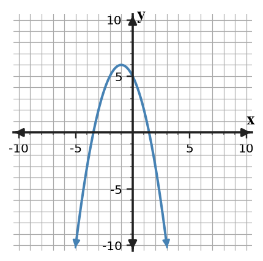

3.
Use the blank coordinate plane to sketch $y=(x+2)(x-4)$. Mark the intercepts and use symmetry to estimate the vertex.

This Practice Set 1 focuses on Section 4.5: Polynomial Structure and Quadratic Graphs. Use the current problems to practice how to use polynomial structure to connect quadratic equations, factors, vertices, and graphs, then use the spirals to keep prior skills active.
For $y=-(x+4)^2+6$, identify the vertex and opening direction.
For $y=(x+1)(x-5)$, identify the $x$-intercepts.
Use the blank coordinate plane to sketch $y=(x+2)(x-4)$. Mark the intercepts and use symmetry to estimate the vertex.
Use the graph of $y=-(x+1)^2+6$ to estimate the vertex and one pair of symmetric points. Then identify whether the quadratic has a maximum or minimum and explain how the equation confirms the direction of opening.

A line representing Plan A has slope \$4 per visit. What does a steeper line mean for cost per visit?
| $x$ | 0 | 1 | 2 |
|---|---|---|---|
| $y$ | 10 | 13 | 16 |
Identify the slope and starting value so this table can be compared with an equation.
A line of fit predicts $75$ but the actual data value is $68$. Calculate the residual and say whether the model overpredicted or underpredicted.
A small data set has points $(2,21)$, $(4,29)$, $(6,38)$, and $(8,47)$. Estimate the slope and write a model that could be used for prediction.
In a gas-cost model, gas costs \$1.50 per gallon.
Two students write an equation for the line through $(2,9)$ and $(6,17)$. Student A first finds slope, then substitutes a point. Student B builds a table back to $x=0$. Compare the methods and decide which is more efficient here.
A model for a school fundraiser is $M=250+45d$, where $d$ is days. A student predicts \$4,750 after $100$ days. Is the prediction arithmetically correct and contextually reasonable for a short fundraiser? Justify both parts.
Create a short context with a constant rate of change of $-4$ units per step and a starting value of $30$. Include a table for four input values and one sentence explaining what the slope means in your context.
In a ticket context, if $s$ is student tickets and $a$ is adult tickets, what does $s+a=120$ represent?
In the equation $8s+12a=1160$, what do the coefficients $8$ and $12$ usually represent in a ticket-sales situation?
The graph shows a system that could be solved by substitution. Estimate the intersection from the graph, then solve using the equations $y=x+1$ and $y=-2x+7$.

Two students analyze this system.
$$\begin{aligned}y\le -x+8\\y\ge 2x-1\end{aligned}$$
Ava graphs first. Ben tests candidate points first. Compare the two methods for finding whether $(2,4)$ and $(4,3)$ are feasible, and decide which is more efficient for only those two points.
For $y=(x-3)^2+2$, state the vertex.
For $y=(x+4)(x-1)$, state the zeros.
Solve $x+y=5$ and $x-y=1$.
Find the slope of $y=-\frac{3}{2}x+4$.